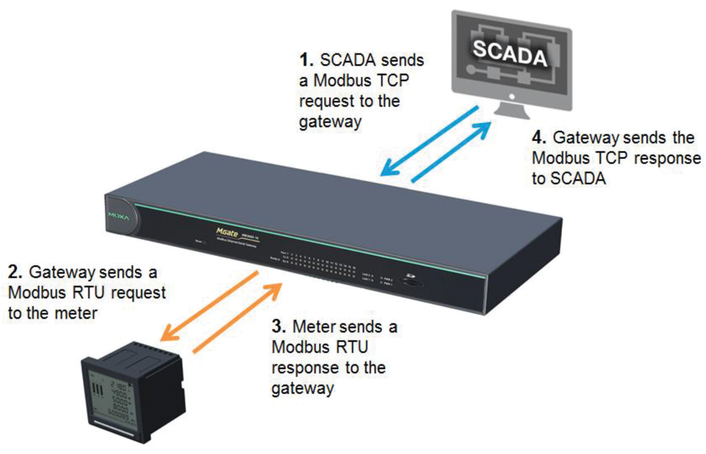
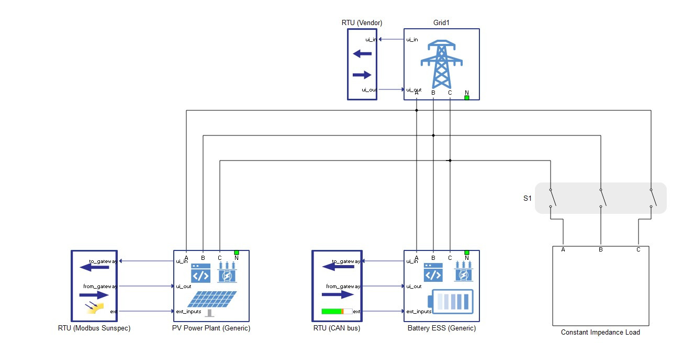
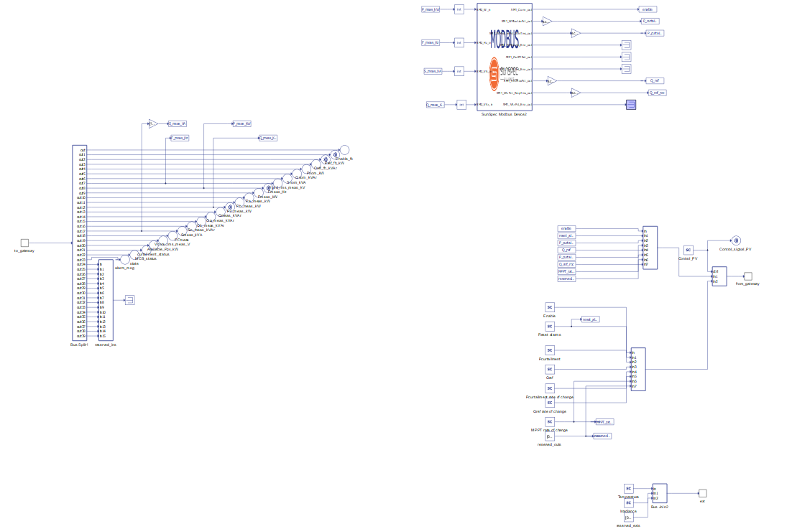
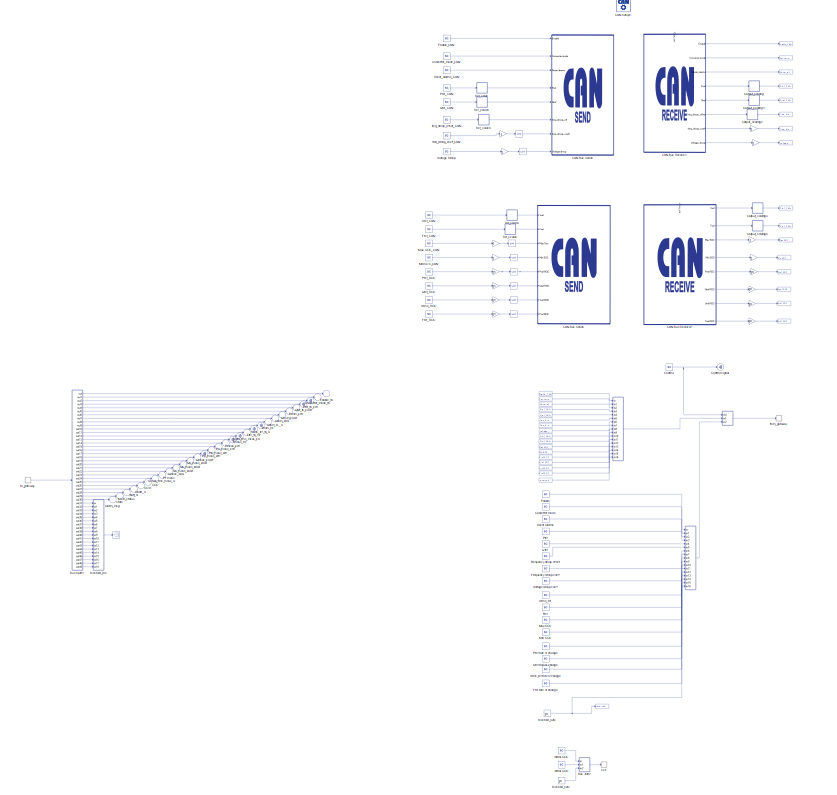
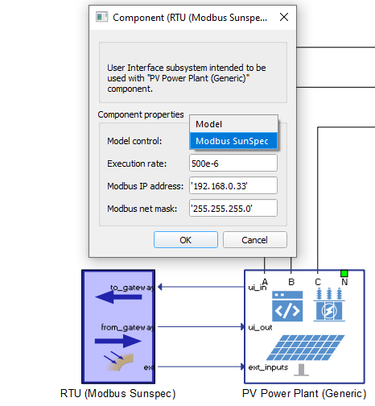
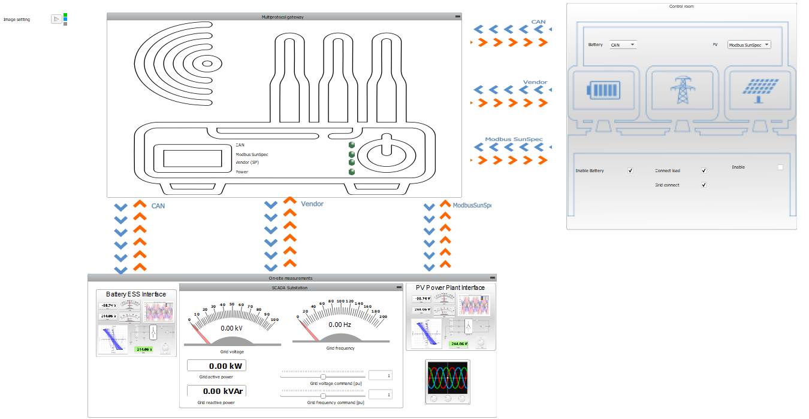
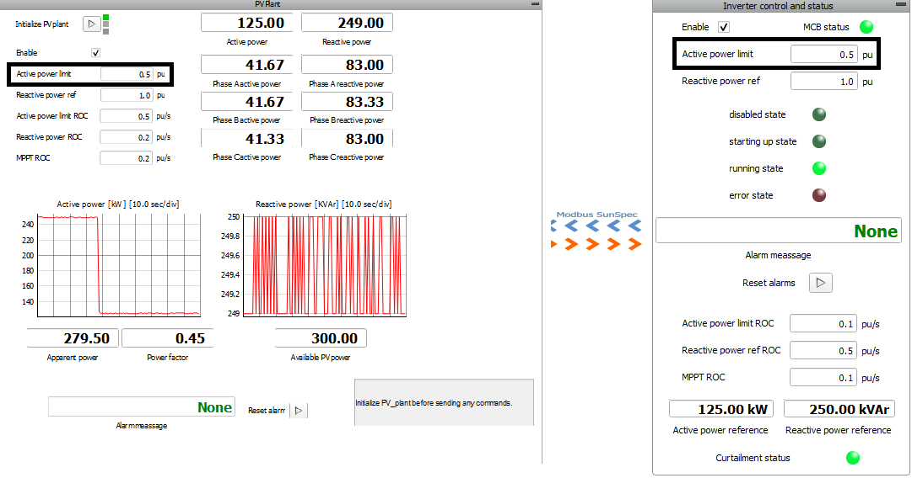
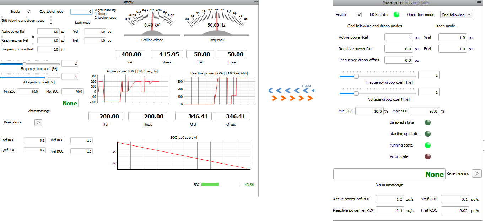
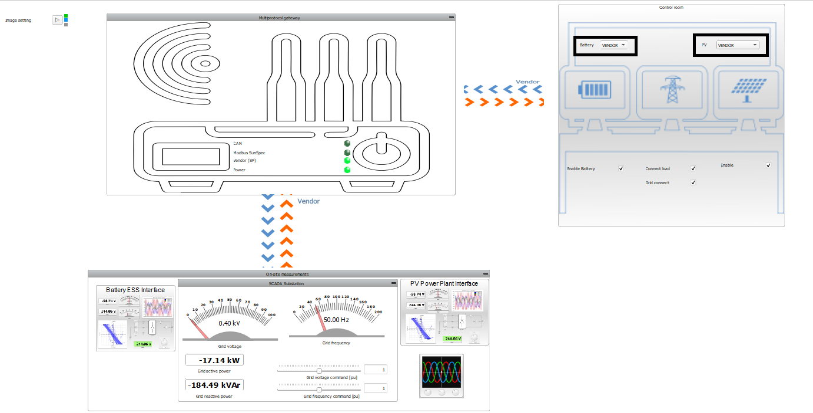
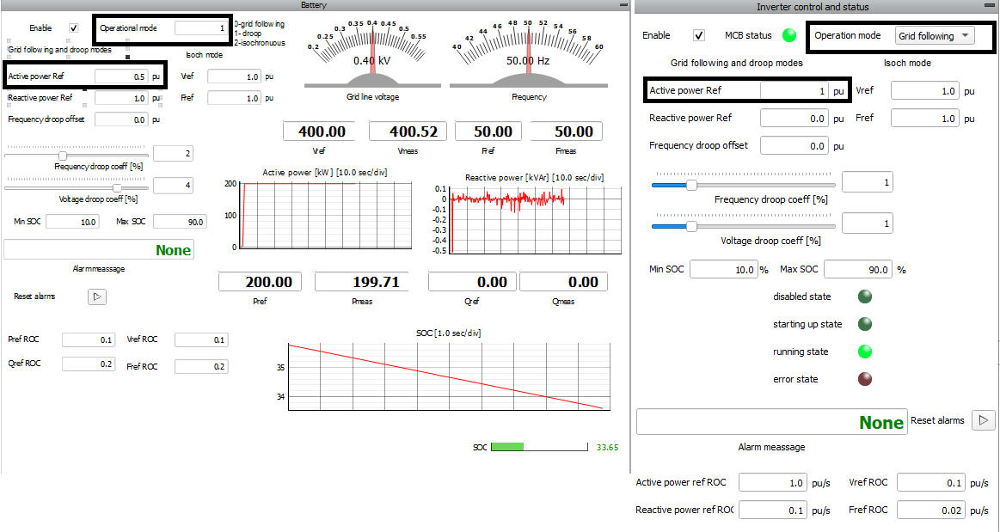

Multi-protocol gateway for DERMS
Demonstration of a communications test environment for a DERMS gateway, by making use of: generic DER components, communication protocols, and their client/server implementations.
Introduction
A distributed energy resource management system (DERMS) relies on gateway devices to pass multi-protocol messages between two types of remote networks: system operators (SCADA, DMS, microgrid controllers, etc) and one or more distributed energy resources (DERs). The remotely operated DER interfaces with the communication infrastructure via a remote terminal unit (RTU). Usually multiple protocols are used, since there are a multitude of equipment vendors and applications. The gateway devices must provide multi-protocol support for an efficient system integration.
This application note shows you how to model a communications test environment for a DERMS gateway, by making use of: generic DER components, communication protocols, and their client/server implementations. The example model does not implement an actual gateway device. Instead, the gateway is represented as a “black box” abstraction that provides data exchange between the SCADA client and the RTU. A TCP client is implemented in HIL SCADA and can send and read TCP messages to/from the DERMS. Additionally, the DERMS communicates with the RTUs, which are located in Schematic Editor and included in the generic UI components. As the best solution for implementation and testing communication protocols, generic components are used.

Model description
The model consists of a PV Power Plant (Generic) and a Battery ESS (Generic) to make a small microgrid connected to the Grid. These components are part of the Microgrid Toolbox. Additionally, a constant impendance load is included in the model.

You can modify UI blocks depending on your needs. In this example, these components are represented as Remote Terminal Units and are named depending on the communication protocol they use: RTU (Modbus SunSpec) and RTU (CAN Bus).


On the mask of each UI block you can choose between two ways of control:
- Model control, which allows for control by signal processing.
- Communication, which allows for control over its communication protocol.

If you choose control via communication, you must set the appropriate IP address with the RTU Modbus SunSpec component, since the CAN Bus is implemented as a loopback.
Simulation
This model comes with a pre-built SCADA panel. It offers the most essential user interface elements (widgets) to monitor and interact with the simulation at runtime, allowing you to further customize it according to your needs.
Before simulation it is necessary to set the same Modbus IP address that you used in Schematic Editor in the SCADA Panel Model Initialization file.
The SCADA panel consists of three groups of widgets:
- Control room
- Multiprotocol gateway
- On-site measurements

The control room is the part from where the TCP request is sent to the gateway. The gateway receives the TCP requests and sends them to the RTU meter which is represented in the On-site measurements group in this example. From On-site measurements, a RTU response is sent to the gateway, which forwards the TCP response to the control room.


The Modbus SunSpec client implementation is done through the SCADA API during Panel Initialization, an example of which is shown below:
SETTINGS_DIR = get_settings_dir_path()
# The 'add_to_python_path(folder)' function can be used to add custom folder
# with Python files and packages to the PYTHONPATH. After folder is added, all Python
# files and Python packages from it can be imported into the SCADA Namespace.
# HIL API is imported as 'hil'
# Numpy module is imported as 'np'
# Scipy module is imported as 'sp'
# Schematic Editor model namespace is imported as 'scm'
# Function for printing to HIL SCADA Message log is imported as 'printf'.
path_to_communication1 = 'RTU (CAN bus).'
path_to_communication2 = 'RTU (Modbus Sunspec).'
path_to_communication3 = 'RTU (Vendor).'
import typhoon.api.modbus as modbus
from typhoon.api.modbus.exceptions import ModbusError, ModbusNotConnected, ModbusInvalidRegSpec
import typhoon.api.modbus.util as mb_util
PV_SERVER_ADDRESS = '192.168.0.33'
PORT = 502
global connected
# PV Panel
PV_client = None
#PV_client = modbus.TCPModbusClient(host=PV_SERVER_ADDRESS,
# port=PORT,
# auto_open=True)
PV_input_register_values = [0]*8
PV_input_register_address = '[40000,40001]U,40002U,40003U,[40004:16]U,[40020:16]U,
[40036:8]U,[40044:8]U,[40052:16]U,40068U,40069U,40070U,40071U,40072U,40076U,40077U,
40080U,40081U,40082U,40084I,40086I,40087U,40088U,40090U,40092I,40093I,40094I,40095U,
40096U,40097U,40098U,40099U,40100U,40101I,40102U,40103U,40104U,40105U,40106U,40107U,
40108I,40109i,40110I,40111u,40112I,40113i,40114I,40115i,40116I,40117I,40118I,[40119:2]
U,40121I,40122U,40123I,40124U,40125I,40126I,40127I,40128I,40129I,40130I,40131I,40132I,
40133U,40134U,[40135:2]U,[40137:2]U,[40139:2]U,[40141:2]U,[40143:2]U,[40145:2]U,
40147U,40148U'
connected = False
Meanwhile, the CAN bus client implementation is done by using CAN loopback. As mentioned in the introduction, the gateway device is an abstraction, hence there is no CAN/Ethernet converter modeled for the client-side. The client-server CAN bus messaging is realized via a direct physical loopback between two CAN controllers on the HIL device.
As is already mentioned, you can choose your model control mode and control these microgrid units via signal processing as shown in Figure 9.


Test Automation
We don’t have a test automation for this example yet. Let us know if you wish to contribute and we will gladly have you signed on the application note!
Example requirements
Table 1 provides detailed information about the file locations and hardware requirements for running the model in real-time, followed by the HIL device resource utilization when running the model using this minimal hardware configuration. This information is provided to help you with running and customizing the model as you see fit.
| Files | |
|---|---|
| Typhoon HIL files | examples\models\communication protocols\generic microgrid with multi-protocol gateway multiprotocol microgrid example.tse SCADA.cus |
| Minimum hardware requirements | |
| No. of HIL devices | 1 |
| HIL device model | HIL404 |
| Device configuration | 1 |
| HIL device resource utilization | |
| No. of processing cores | 1 |
| Max. matrix memory utilization | 68.26% |
| Max. time slot utilization | 33.93% |
| Simulation step, electrical | 4 µs |
| Execution rate, signal processing | Multi-rate (100 µs, 500 µs) |
Authors
[1] Jovana Markovic